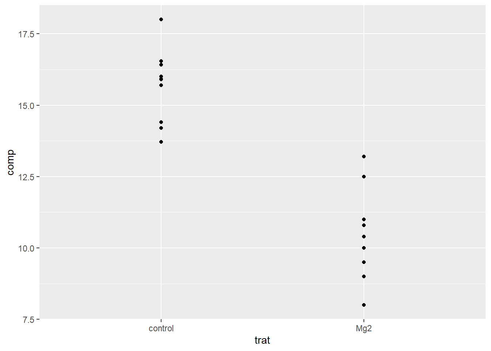
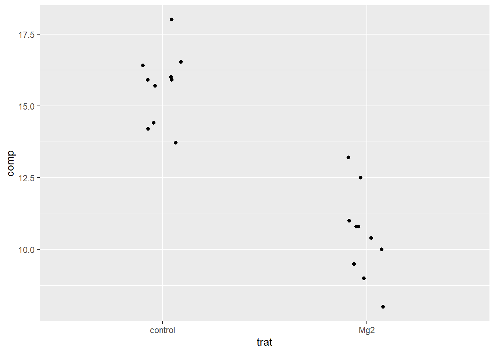
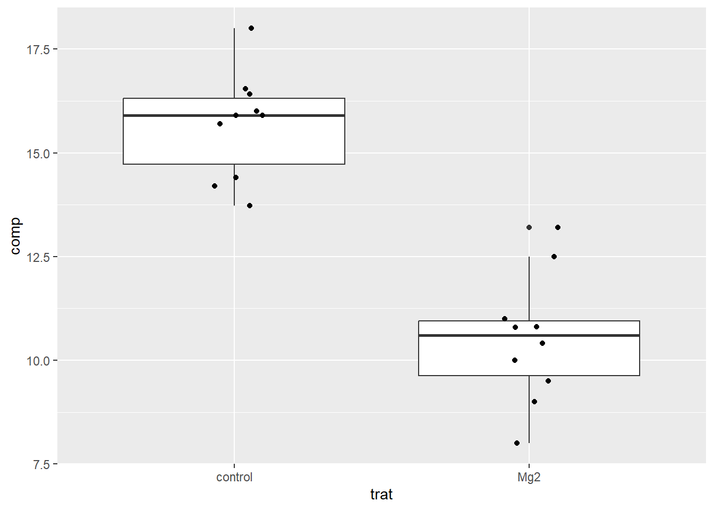
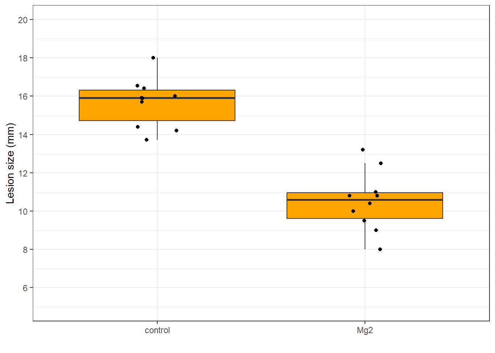
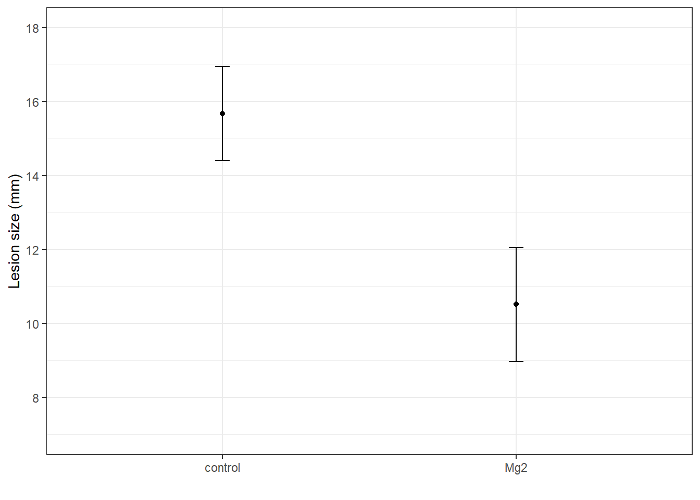
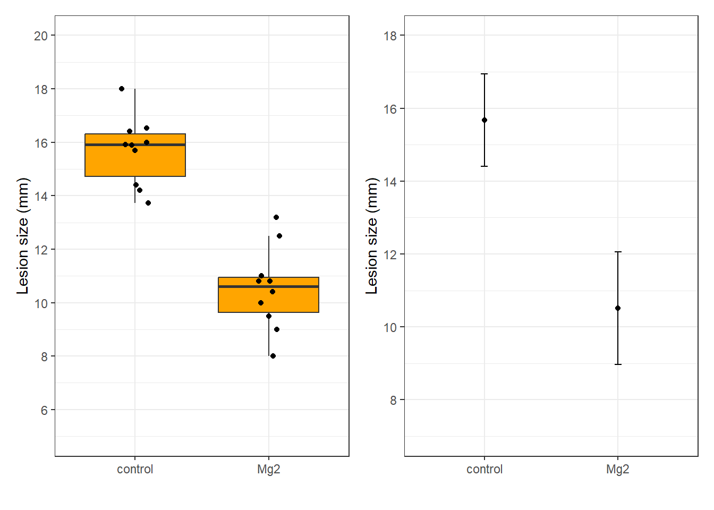
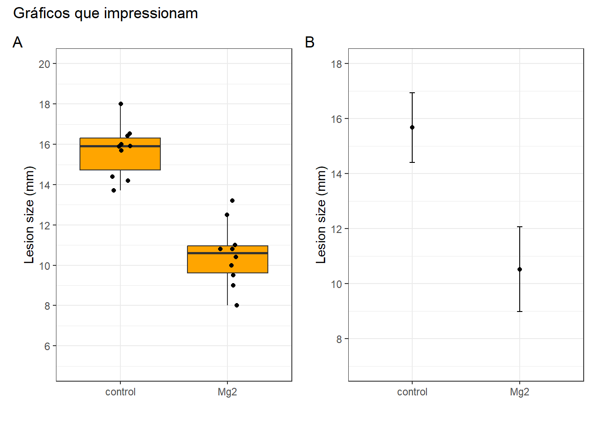
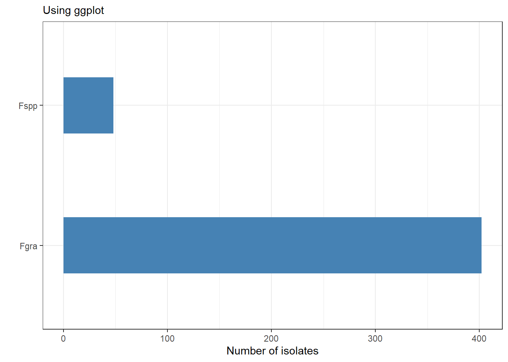
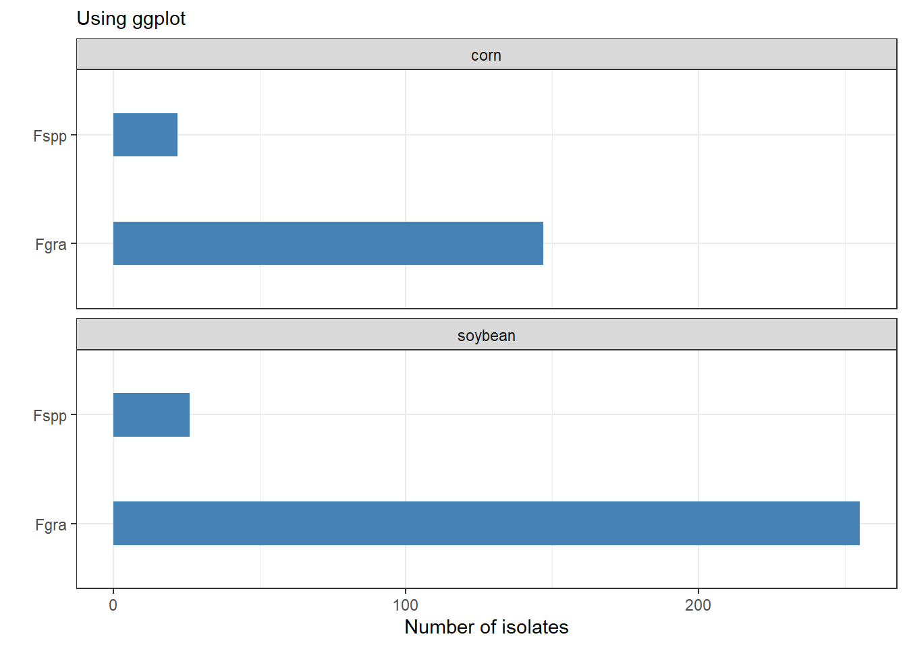

library(tidyverse)
library(readxl)
mg <- read_excel("dados-diversos.xlsx")Aula5
Segundo plot
Importa dados
Sempre carregar primeiro o tidyverse e depois o pacote que irá usar para importar os dados, no caso de planilhas excel, o pacote readxl. Após isso, deve escolher a atribuição dos dados.
Visualiza
O ggplot é o pacote usado para visualização dos dados. Para visualizar os dados, basta usar a função ggplot.É importante que se defina antes quem será o eixo x e y (no caso, y é o comprimento da lesão, enquanto x são os tratamentos - controle e mg2). Depois, usa a função aes (aesthetic) do que deseja que apareça no gráfico e adiciona a camada geom_point para que os dados sejam vistos em forma de pontos.
mg |>
ggplot(aes(trat, comp))+
geom_point()
Muitas vezes, ocorre a sobreposição de pontos no gráfico. Para desagregar esses pontos, usa-se a função geo_jitter e, para evitar que os dados fiquem muiito dispersos, pode-se definir a largura.
mg |>
ggplot(aes(trat, comp))+
geom_jitter(width = 0.1)
Para adicionar o boxplot e mudar a visão do gráfico, basta adicionar mais uma camada, ou seja, aciona função geom_boxplot.
mg |>
ggplot(aes(trat, comp))+
geom_boxplot()+
geom_jitter(width = 0.1)
Para tirar a cor do outlier, aumentar o tamanho dos pontos e colorir o boxplot:
p_box <- mg |>
ggplot(aes(trat, comp))+
geom_boxplot(outlier.color = NA,
fill = "orange",
size = 0.5)+
geom_jitter(width = 0.1,
height = 0,
color = "black")+
scale_y_continuous(limits = c(5,20),
n.breaks = 10)+
labs(y = "Lesion size (mm)",
x = " ")+
theme_bw()
p_box
ggsave("figs/plot2.png", bg = "white")Para sumarizar os dados, usa-se a summarise e função media da variável comprimento. Depois disso, transforma no ggplot e muda a estética. Para adicionar a barra de erro, usa-se a função errorbar. Para omitir os comandos das colunas, basta adicionar uma # na frente da linha de comando.
p_means <- mg |>
group_by(trat) |>
summarise(comp_mean = mean(comp),
comp_sd = sd(comp)) |>
ggplot(aes(trat, comp_mean))+
#geom_col(fill = "orange",
#width = 0.5)+
geom_point()+
scale_y_continuous(limits = c(7,18),
n.breaks = 6)+
geom_errorbar(aes(ymin = comp_mean - comp_sd,
ymax = comp_mean + comp_sd,
width = 0.05))+
theme_bw()+
labs(y = "Lesion size (mm)",
x = " ")
p_means
#salvando gráfico
ggsave("figs/mean_sd.png",
width = 4,
bg = "white")Instalando o ggthemes e carregando pacote:
library(ggthemes)Composição de plots - Pacote PATCHWORK
O patchwork torna possível combinar ggplots diferentes e separados em um mesmo gráfico. Depois de instalar, carrega o pacote. Para unis diferentes ggplots, é necessário utilizar o títullo desses ggplots separados pelo sinal de + ou pela barra reta (|).
library(patchwork)
p_box + p_means
#ou então usar a função abaixo
p_box | p_means# para adicionar letras A, B para identificar o grafico e adicionar titulo:
(p_box | p_means)+
plot_annotation(tag_levels = "A",
title = 'Gráficos que impressionam')
ggsave("figs/combined.png")Gráfico com dados survey
Para inverter as barras usa-se a função coord_flip().
survey <- read_excel("dados-diversos.xlsx",
sheet = "survey")
survey |>
filter(state == "RS") |>
#Para contar o numero de ocorrencias em cada classe:
count(species) |>
ggplot(aes(species, n))+
geom_col(width = 0.4,
fill = "steelblue")+
coord_flip()+
labs(x = " ", y = "Number of isolates",
tiltle = "Horizontal bar plot",
subtitle = "Using ggplot")+
theme_bw()
ggsave("Figs/barplot.png", bg = "white")Adiconar faceta
Fução facet_wrap:
survey |>
filter(state == "RS") |>
count(species, residue) |>
ggplot(aes(species, n))+
geom_col(width = 0.4,
fill = "steelblue")+
coord_flip()+
facet_wrap(~residue, ncol = 1)+
labs(x = " ", y = "Number of isolates",
tiltle = "Horizontal bar plot",
subtitle = "Using ggplot")+
theme_bw()
ggsave("Figs/barplotfacet.png", bg = "white")